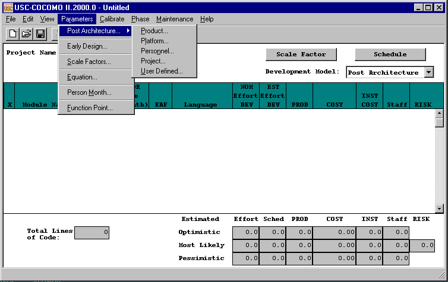
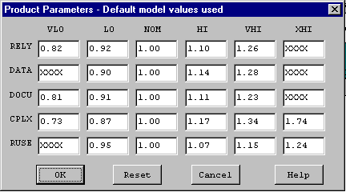
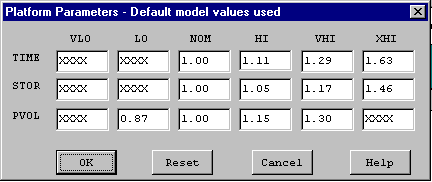
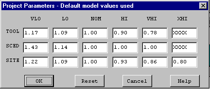
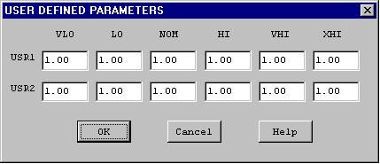
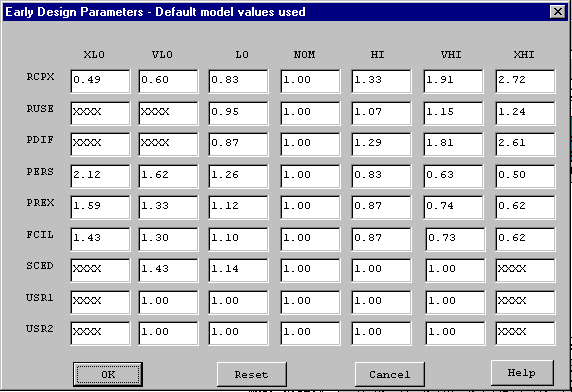
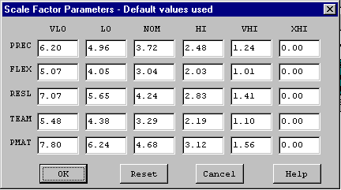
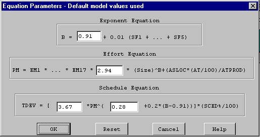
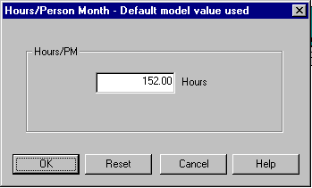
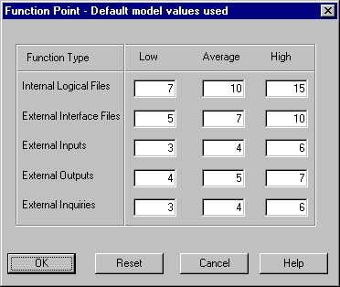

The Parameters menu option will enable you to look at, or change the values of effort adjustment factors, scale factors and effort/schedule estimating equations factors for the current project.
To choose the Parameters menu and its options, click on Parameters with the mouse. The Parameters menu will appear as Figure 4-1.

FIGURE 4-1 Parameters Menu
4.1 Post Architecture Model
The Product option displays five cost drivers: RELY, DATA, DOCU, CPLX, and RUSE and their corresponding ratings and multiplier values. Select Product from the Parameters menu with the mouse. The Product Dialog Box will appear as Figure 4-2.

FIGURE 4-2 Product Dialog Box
To modify these values, go straight to those edit boxes and type new values. When finished with the modification, click the OK button.
The Platform option displays three cost drivers: TIME, STOR and PVOL, and their corresponding ratings and multiplier values.
Select Platform from the Parameters menu with the mouse. The Platform Dialog Box will appear as Figure 4-3.

FIGURE 4-3 Platform Dialog Box
To modify these values, go straight to those edit boxes and type new values. When finished with the modification, click the OK button.
The Personnel option displays six cost drivers: ACAP, APEX, PCAP, PLEX, LTEX, and PCON and their corresponding ratings and multiplier values.
Select Personnel from the Parameters menu with the mouse. The Personnel Dialog Box will appear as Figure 4-4.
FIGURE 4-4 Personnel Dialog Box
To modify these values, go straight to those edit boxes and type new values. When finished with the modification, click the OK button.
The Project option displays three cost drivers: TOOL, SCED, and SITE and their corresponding ratings and multiplier values.
Select Project from the Parameters menu with the mouse. The Project Dialog Box will appear as Figure 4-5.

FIGURE 4-5 Project Dialog Box
To modify these values, go straight to those edit boxes and type new values. When finished with the modification, click the OK button.
The User Defined EAF option displays two cost driver: USR1 and USR2, and their corresponding ratings and multipliers.
Select User EAF from the Parameters menu with the mouse. The User EAF Dialog Box will appear as Figure 4-6.

FIGURE 4-6 User Defined EAF Dialog Box
To modify these values, go straight to those edit boxes and type new values. When finished with the modification, click the OK button.
The Early Design model supports only seven Effort Adjustment factors, plus two user defined factors as shown below in Figure 4-7.

FIGURE 4-7 Early Design Model - EAF Dialog Box
The Scale Factors option displays five development attributes: PREC, FLEX, RESL, TEAM and PMAT, and their corresponding ratings and values. Select Scale Factors from the Parameters menu with the mouse. The Scale Factor Dialog Box will appear as Figure 4-8.

FIGURE 4-8 Scale Factors Dialog Box
To modify these values, go straight to those edit boxes and type new values. When finished with the modification, click OK button.
The Equation options displays effort and schedule equations. Select Equation from the Parameters menu. The Equation Dialog Box will appear as in Figure 4-9.

FIGURE 4-9 Equation Dialog Box
To modify these values, go straight to those edit boxes and type new values. When finished with the modification, click the OK button.
4.5 Person Month
It is possible to vary the number used to calculate person months. Figure 4-10 shows the dialog box.

Figure 4-10 Dialog Box for Person Month
4.6 Function Point
This command causes a dialog box to appear that permits alteration of the Function Point complexity weights.

Figure 4-11 Dialog Box for Function Point Complexity Weights